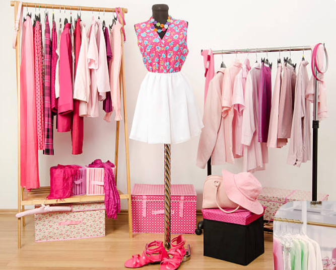
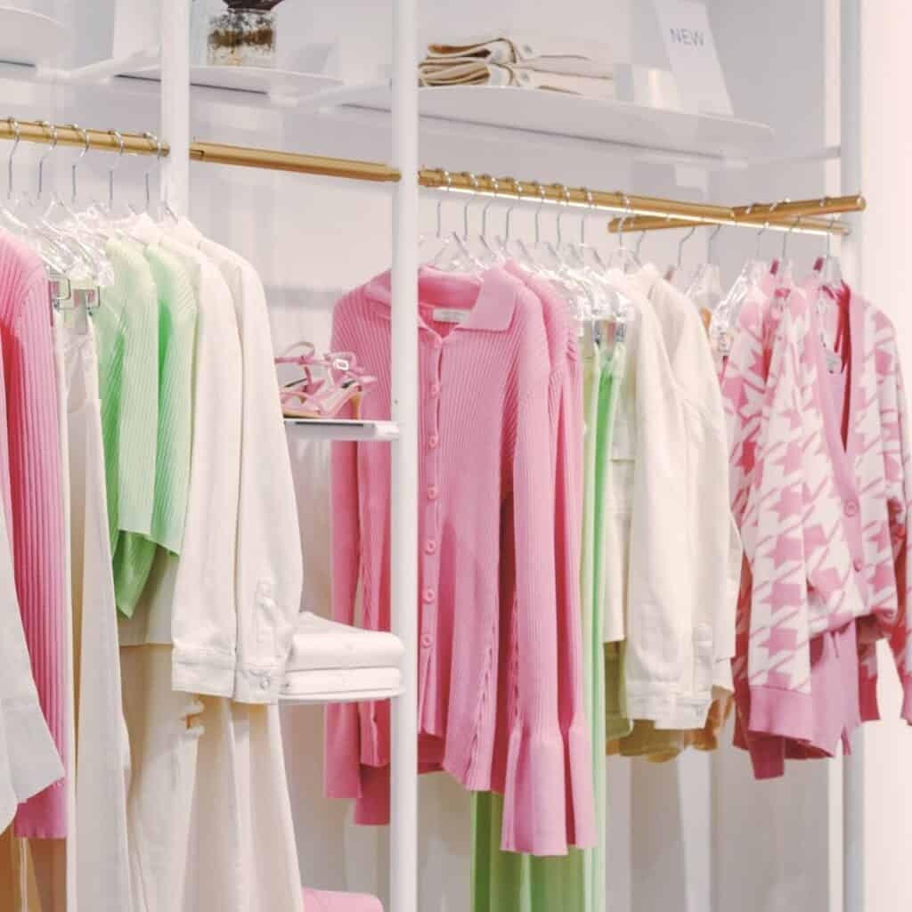
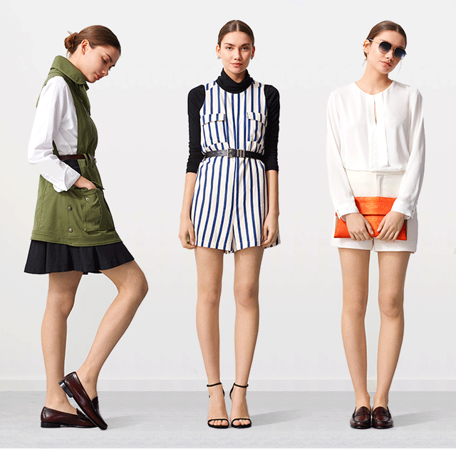

SEU GUARDA-ROUPA
REINVENTADO.



1. Encontre suas peças
com poucos cliques
Cansou de procurar incessantemente por
peças no seu guarda-roupa? Cadastre
as peças do seu armário no Fashion Lab e
tenha tudo organizado em um só lugar.

2. Monte looks sem
2. Monte looks sem
abrir seu armário
Combine suas peças de forma prática,
criando looks diretamente no Fashion
Lab. Experimente e personalize suas
combinações com total liberdade!

3. Consuma conscientemente!
Quer entender melhor o impacto de suas
escolhas? Acompanhe o histórico de peças do
seu cotidiano e compre de modo consciente,
valorizando o seu guarda-roupa